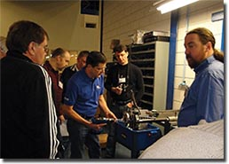
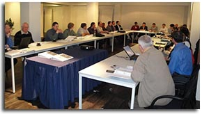

TASC ForceThe Sonnax TASC Force plays an invaluable role in identifying the root causes of transmission problems and supporting the development of transmission products for the automotive aftermarket industry. The TASC Force is composed of experienced transmission rebuilders and technicians who value technical innovations and have hands-on understanding of the latest units and industry developments. Working closely with Sonnax design engineers and technicians, TASC Force members contribute product ideas, test new products, trouble-shoot results, and get together on a regular basis to listen, discuss, and compare findings. They willingly share their know-how, with the understanding that everyone benefits when good ideas and products emerge from centuries of combined transmission wisdom.
When you see the "TASC Force Approved" logo on a Sonnax product, it means the product has passed stringent testing by Sonnax and by TASC Force member shops. "TASC Force Approved" provides added assurance that this part has been studied, tested and endorsed by some of the most savvy technicians and rebuilders in the industry. 2010 TASC Force MeetingThe 2010 TASC Force meeting took place Jan. 22-23 at Ganzeboom Transmissies in Almelo, Netherlands. The two-day international event focused on discussion plus hands-on workshops in the Transmissies facility. Bob Warnke, Sonnax V.P. of Technical Development, presented and moderated the group’s technical exchanges and discussions on market trends, product feedback and new product idea development. A reflection of the automotive industry’s increasingly global nature, attendees included Sonnax representatives as well as individuals from Belgium, Germany, Latvia, Sweden, the Netherlands, Poland, Russia, Saudi Arabia, Switzerland, the U.K. and the U.S.
 Sonnax Transmission Technical Specialist Gregg Nader (center) and Technical Group Manager Scott Jackson (right) led one afternoon’s workshop on valve body reaming procedures, inspection and vacuum testing. Here, Nader demonstrates reaming with a Sonnax valve body reaming fixture |
 2010 TASC Force meeting in the Netherlands
What people are saying about why the TASC Force is so important to this industry: "We have always looked at what causes failures, as well as what actually failed. This is the only true way of doing a great job for our customers. By becoming involved with the TASC Force, and using Sonnax products religiously, we are better able to do just that. "Sonnax and the TASC Force have invested thousands of hours in testing. The results of these efforts allow the transmission industry to produce a quality product at a competitive price." "The TASC Force is another example of what happens when people in this industry get together to address common issues. The people I've met on the TASC Force are some of the sharpest in the industry and the work they do helps the entire industry Keep it up." "Transmission Digest continues to depend on the TASC Force for answers and explanations our readers need to address everyday rebuilding issues and seldom encountered pitfalls in their shop operations. Our TASC Force Tips column is highly regarded by an avid and interested readership." "The TASC Force has been very helpful in addressing the needs and problems of the European, and especially the U.S. market, yes." |